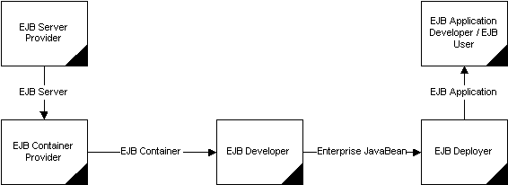

The
EJB Lifecycle
Gopalan Suresh Raj
In any enterprise development scenario, there are usually numerous complex programming issues involved, which usually require the involvement of multiple domain experts. Without addressing all these issues and cohesive team-oriented approach, it is impossible to create successful enterprise applications. To ease enterprise development, the EJB specification assigns responsibilities or roles and specifies who is responsible for delivering what in an enterprise application that uses EJBs as shown in Figure. Do note that the EJB specification does not necessarily preclude the same person from carrying out more than one role.
 Figure: The lifecycle of a typical enterprise Java Bean |
Let us take a closer look at the different roles that the EJB specification defines in greater detail:
EJB server provider
The EJB server provider provides an organized application framework in which to run the EJB containers. The EJB server vendor will implement and provide access to a JNDI-compatible naming service and a transaction service that is CORBA-OTS compatible. It should also be noted that the EJB server vendor might also act as the EJB container vendor.
EJB container provider
The EJB container provider provides software to install an EJB Bean with its supporting classes on an EJB server. The container vendor is also responsible for providing runtime classes that provide the required services to the EJB instances. These include the generation of stubs and skeletons classes to provide access to the EJB instance’s Home object and EJBObject, installation of references to the Home object in a JNDI-accessible namespace. Additionally, it also has to make available a suitable EJBObject implementation that can provide correct proxy services for the EJB class.
EJB developer
The EJB developer should have knowledge not only of the EJB specification, but also business needs since she is responsible for coding the business logic into server side components. Basically, the developer implements EJB classes that focus on the business logic using the classes and interfaces defined in the EJB specification.
While the EJB container is responsible for handling all the transaction controls on behalf of the EJB instance, it is important that the EJB developer understands how transactions work. Consequently, it is the responsibility of the developer to stipulate to the EJB deployer the transactional needs of the various methods in the EJB class. The EJB spec calls the EJB Developer, the Enterprise Bean provider.
EJB deployer
Although the EJB deployer may not be a Java developer nor understand the business rules that an EJB class implements, she should understand the application framework in which the EJB instance runs. Additionally, she should have an in-depth understanding of the characteristics of the run-time server environment such as database types, its location, etc. The deployer is responsible for taking the EJB and all its supporting classes and installing them correctly on the EJB server.
The deployer gets the EJB class requirements from the EJB developer such as transactional needs, names and descriptions of the required environment properties and so forth. The deployer is responsible for making these properties, along with their correct runtime values available to the EJB class at runtime. The deployer also has to ensure that the Home object for the EJB class is available in the namespace and is accessible through JNDI. Naturally, it is critical that the deployer and the developer communicate clearly, to ensure that the EJB class is deployed with the correct deployment attributes.
Application developer
The application developer writes the client applications using pre-built EJB components. Here, a client is defined generally and can be a Java application, applet, servlet, a natively compiled CORBA application accessing EJB components using IIOP or even an ActiveX control connecting through a COM-CORBA bridge.
The application developer can thus plug-in ready-made EJBs without having to develop or test them or having any internal knowledge of how to integrate them. This frees her up to concentrate on high-level functionality such as data presentation without having to worry about how such data is actually obtained. The EJB spec calls the Application developer, the Application assembler.
click here to go to
My EJB HomePage...
| About the Author... |
| Gopalan Suresh Raj is a Software Architect, Developer and an active Author. He is contributing author to a couple of books "Enterprise Java Computing-Applications and Architecture" and "The Awesome Power of JavaBeans". His expertise spans enterprise component architectures and distributed object computing. Visit him at his Web Cornucopia© site (http://www.execpc.com/~gopalan) or mail him at gopalan@execpc.com. |
|
This site was developed and is maintained by Gopalan Suresh Raj This page has been visited |
|
Last Updated : Dec 19, '98 |
||
Copyright (c) 1997-98, Gopalan Suresh Raj - All rights reserved. Terms of use. |
All products and companies mentioned at this site are trademarks of their respective owners. |